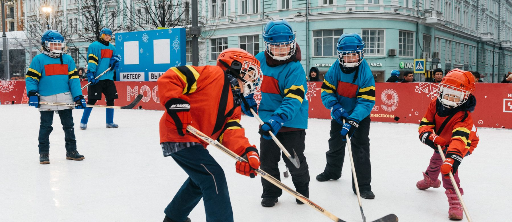

Four actionable practices, each grounded in the survey data
The transition from middle school to high school represents a massive drop-off in sports participation. According to the survey data, academic pressure is a severe bottleneck: 78% of participants identified increased school work and a lack of free time as the primary factor limiting their participation in ice sports. This intense academic focus contributes to a remarkably low frequency of ongoing participation — 36% of respondents engage in ice sports fewer than twice a year, and only 8% participate more than three times a week.
Sports and educational bureaus should collaborate to establish a system that recognises athletic engagement alongside academic achievement. High school and university admissions should incorporate comprehensive evaluations of team sports leadership and long-term athletic participation. However, since current economic conditions and the size of the hockey population do not support such a reform immediately, this proposal can be revisited once government funding increases and public awareness of ice sports improves.
The fundamental logic of athletic cultivation should move away from an exam-oriented selection mode. Evaluation metrics for local sports authorities should prioritise the long-term retention rate of the youth sports population rather than short-term numerical increases or gold medals. Selection processes should weigh participation more heavily and shift attention away from results alone.
Geographic and economic realities heavily restrict access. 73.33% of respondents cite a lack of facilities close to home as a major deterrent, while 53.33% feel the entry threshold is too high due to insufficient training opportunities. Public awareness issues persist: many parents perceive ice hockey as extremely intense and dangerous, intentionally keeping their children away despite the benefits of teamwork and discipline. Interviewees also reported feeling lonely and separated from the mainstream as the drop-off happened around sixteen — which discouraged participation and drove some to play abroad.
Promote lightweight virtual simulation modules in schools and community centres. Using VR and interactive off-ice training games, young people can develop foundational balance and tactical rule comprehension away from the rink, dramatically lowering financial cost and mitigating injury risk. The most important aspect is that effective game design can achieve unprecedented effects — if a great many users are genuinely excited by a training system or game, it can help them step onto the rink and start skating. This requires government funding for research and development.
Break down information asymmetry by developing tools such as centralised ice hockey seminars and open community forums. To change the public's perception of danger, authorities should conduct active outreach using officially certified, bite-sized instructional videos that demystify the sport and highlight proper safety precautions. Public advertising can further raise awareness.
A significant barrier to a robust ice sports culture is the severe lack of proper educational and training programmes with qualified coaches. Based on global interviews and written feedback, professional training has relied on highly disciplined, closed-door environments. This top-down, authoritarian coaching style suppresses athletes' passion and decision-making capability — precisely what high-uncertainty team sports require. Moreover, intensive schedules overlapping with normal school days, combined with a small community, scared away many students and parents, making the identity of "student-athlete" impossible to sustain past sixteen.
What plays do you guys want to run in the third period? — A question that does not get asked in a closed-door programme
Overhaul the national coaching curriculum to introduce modules focused on facilitative coaching and on-ice improvisation. High-quality training programmes are the only way to sustainably develop the culture. Furthermore, the coaching pool should expand beyond Chinese and Russian coaches to include American and Canadian coaches, whose style and experience differ significantly — a potential route to reforming the community's culture and atmosphere. As the coach and facility base grows, new training leagues and rinks become available, relieving the pressure on players to join provincial training that overlaps with school days.
Restructure locker room culture to empower athletes. Coaches should encourage captains and core players to participate actively in real-time tactical planning, shifting the athlete's role from passive order-taker to self-determined decision-maker. This should never be a standalone practice: the wider educational system must also reform and encourage participation, so that players feel relaxed enough to contribute tactically — knowing there are other teams and organisations where they can pursue hockey if the current team's culture does not fit.
Ice sports lack deep community integration and the general public remains largely unaware of them. 51.92% of surveyed individuals are not well-informed about ice sports, and 65.38% perceive general public awareness to be low. To survive, the sport must transition from a niche athletic pursuit to a core component of youth culture. Moreover, when the business system around a sport is developed — as the NHL is in North America — athletes need not fear unemployment after retirement, because plenty of other career options and support exist.

Encourage the formation of student-led sports clubs that merge athletics with other disciplines. Hosting events such as "Sports Tech Challenges" or business pitch competitions can integrate ice hockey into the broader educational and commercial landscape.
Position team sports as vehicles for school pride and community belonging. Facilitate online Q&A sessions and behind-the-scenes content to build a genuine fan culture. Establish a youth athlete advisory board so that official channels continuously hear the authentic voices of student-athletes.
The survey highlights that an overwhelming 92.86% of informed individuals learned about ice sports through social media platforms such as TikTok and Xiaohongshu. Future awareness campaigns must abandon dry lectures and instead use peer-driven podcasts, interactive webpages and short-form video storytelling to attract younger generations organically.